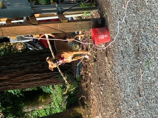

Meet my bestfriend Dude! He's a mix of Pitbull and German Shepherd mix.
Our Story
Dude isn’t just a dog, he’s a force of calm in motion. A 100-pound mix of Pitbull and German Shepherd, he carries the power,
intelligence, and steadiness of both breeds. He’s not loud or showy; he’s observant, decisive, and aware of every shift in his surroundings.
When he moves, there’s purpose. When he rests, there’s peace.
Working with him is less about control and more about connection. He reads my rhythm and adjusts without a word — a partner,
not a possession. His instincts are sharp, his loyalty absolute, and his presence turns any space into something safe.
Every day with him is a lesson in patience, strength, and trust.
This page is for him — to honor the work, the discipline, and the quiet dignity that defines a true service animal. He’s not a pet.
He’s a partner with purpose.
Picture: Dude by the Flowers
Dude at rest — alert but at ease, grounded in awareness and calm strength.
Dude’s Breeds, Facts & Safety
Understanding Dude means understanding the breeds that built him. Strength without aggression.
Focus without fear. Loyalty without limits. These traits run deep through his lineage — refined
by discipline, shaped by trust, and proven through daily service.
Dude’s Unique Heritage
His blend of Pitbull and German Shepherd creates a balance of drive and discernment.
The Shepherd brings intelligence, courage, and a steady mind. The Pitbull adds loyalty,
power, and heart — never backing down from what matters. Together, they form a service dog
with a calm readiness and a deep instinct to protect.
Intelligence: German Shepherds are among the most trainable breeds on earth.
Loyalty: Pitbulls bond fiercely and serve with unmatched devotion.
Balance: This mix builds a dog who leads with instinct, not impulse.
Working Dogs & Rescue Units
Dogs like Dude don’t just assist — they anchor. His kind of training demands precision,
patience, and trust built over time. Service animals share the same roots as those
who search, detect, or protect — all trained for focus under pressure.
Search & Rescue: Shepherds are known for endurance and clarity in chaos.
Support & Therapy: Pitbulls provide calm strength and emotional grounding.
Detection & Focus: Their instinct sharpens with purpose — to keep people safe.
Picture: Dude with His Stick

Focused, grounded, and proud — his favorite stick isn’t just play, it’s precision practice.